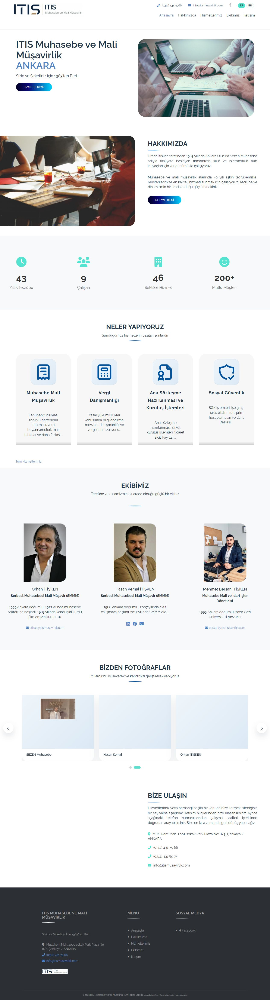
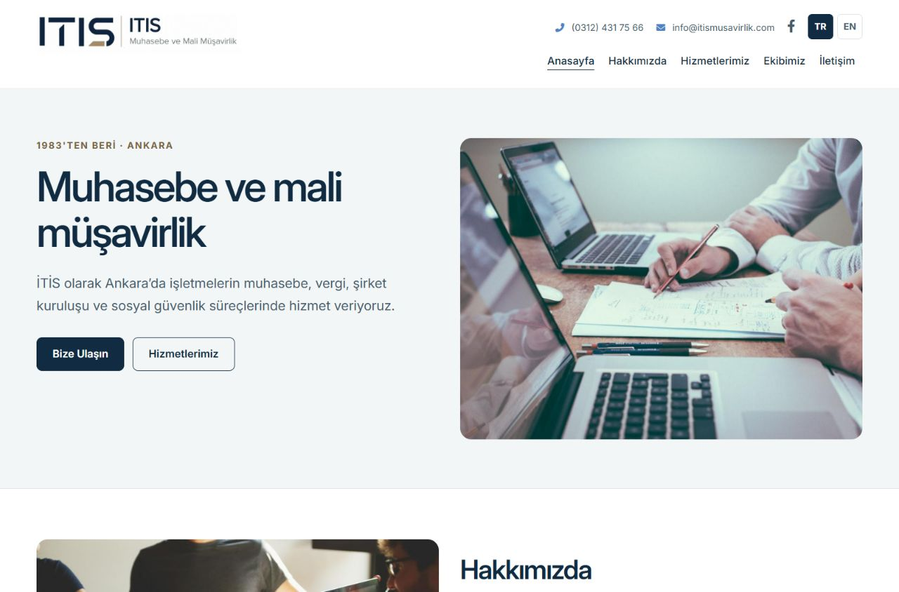
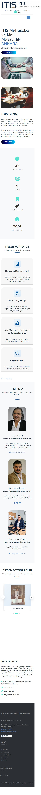
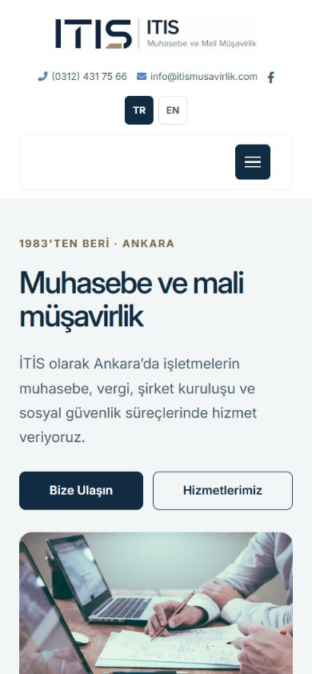

İTİS · YÖNETİCİ ÖZETİ · 14 EKİM 2026
Daha okunaklı bir site.
Daha açık bir hizmet anlatımı.
İTİS’in mevcut kimliği, fotoğrafları ve hizmet alanları korunarak Türkçe ve İngilizce sayfalar yenilendi. Çalışmanın odağı; ziyaretçinin hizmet kapsamını anlaması, ekibi tanıması ve iletişim bilgilerine kolay ulaşması.
Çalışma branch’ı: codex/itis-ui-content-refresh. Bu rapordaki yeni ekranlar yerel üretim çıktısının önizlemesidir; canlı yayına alınmış bir değişiklik değildir. Önceki ekranlar mevcut canlı siteden alındı.
Neyi, neden değiştirdik?
| Bulgu | Değişiklik | Gerekçe |
|---|---|---|
| İnce yazılar, küçük alt bilgi ve renk geçişli düğmeler okuma yükünü artırıyordu. | Sistem yazı tipi, 16–19 px gövde metni, koyu lacivert başlıklar, düz renk düğmeler, açık yüzeyler. | Metinleri daha rahat okumak ve önemli eylemleri ayırt etmek. Kullanılmayan Google Fonts istekleri kaldırıldı. |
| 390 px mobil ekranda sayfa genişliği 465 px’e taşıyordu. | Logonun yüzde 200 genişliği kaldırıldı; mobil boşluklar, kartlar ve uzun e-posta adresleri düzenlendi. | Yatay kaydırma olmadan okunabilir bir mobil görünüm sağlamak. |
| Ana ekran ağırlıklı olarak firma adı ve şehir gösteriyordu. | Hizmeti açıklayan ana başlık, kısa tanıtım, “Bize Ulaşın” ve “Hizmetlerimiz” seçenekleri. | Ziyaretçinin ne sunulduğunu ve bir sonraki adımı ilk ekranda anlaması. |
| Hizmet listeleri uzun, tekrarlı ve bazı ifadelerin mesleki kapsamı belirsizdi. | Dört kısa hizmet özeti, her hizmet için beş maddelik kapsam ve karttan ilgili detay bölümüne bağlantı. | Bilgiyi taranabilir kılmak. Tasdik, dava yürütme ve sonuç garantisi çağrıştıran ifadeleri daraltmak. |
| 9 çalışan, 46 sektör, 200+ mutlu müşteri sayaçlarının güncelliğini gösteren kaynak yoktu. | Kuruluş yılı, ofis konumu, SMMM unvanı ve dört hizmet alanı gösteriliyor. | Kaynağı olmayan pazarlama ölçülerini yeni tasarıma taşımamak. Yeni müşteri veya başarı iddiası eklenmedi. |
| Tarihçe küçük yazılar ve geniş boşluklarla uzuyordu; 1977 ve 1983 bağlamı karışıktı. | Yıl–olay listesi, daha büyük yazılar; kurucunun meslek başlangıcı ve ofisin kuruluşu ayrı anlatılıyor. | Kurumsal geçmişi daha açık ve erişilebilir sunmak. |
| Başlık hiyerarşisi ve aktif menü işaretleri tutarsızdı. | Her sayfada tek H1, ekipte H3, doğru aktif sayfa işareti, içeriğe geç bağlantısı, belirgin klavye odağı. | Sayfa yapısını ekran okuyucu ve klavye kullanıcıları için anlaşılır kılmak. |
İnceleme sonrası tercih: Footer’daki EdgeeTech hazırlayan bağlantısı ve çevresindeki metin önceki 9 px boyutunda korundu. Genel telif metni daha okunaklı boyutta kalıyor. Satırın paragraf genişliği sınırı kaldırılarak yaklaşık 742 px ekranda tek satır ve merkezde görünmesi doğrulandı; hazırlayan ifadesinin kendi içinde bölünmesi engellendi. Güncel footer görüntüsü.

İçerik yaklaşımı
Üstünlük, müşteri memnuniyeti ve vergi tasarrufu vaatleri yerine mesleki hizmetlerin kapsamı anlatıldı. İngilizce içerik aynı kapsamı izliyor; SGK gibi Türkiye’ye özgü terimler korundu. Ekibin mevcut isimleri, unvanları, biyografileri ve iletişim bilgileri değiştirilmedi. Tarih ve unvanlar mevcut repo içeriğine dayanıyor; bağımsız yeniden belgelendirme yapılmadı.
İletişim metni kısaltıldı ve ilk görüşmede hangi bilgilerin paylaşılabileceği belirtildi. Yeni form veya belge yükleme alanı eklenmedi; hassas mali belgelerin ilk e-postada gönderilmemesi önerildi.
Editoryal referans: TÜRMOB’un yönetmelikler dizininde yer alan Haksız Rekabet ve Reklam Yasağı Yönetmeliği. Bu çalışma metni bilgilendirici yönde sadeleştirir; kapsamlı bir mesleki mevzuat uygunluk incelemesi değildir.
Önce / sonra · masaüstü




Önce / sonra · mobil




Hizmet, ekip ve İngilizce sayfalar
Tam sayfa ekran görüntüleri: Hizmetler — masaüstü, Hizmetler — mobil, Hakkımızda, ekip ve tarihçe, İngilizce — masaüstü, İngilizce — mobil, Ana sayfa hizmet kartları.


Doğrulama ve sınırlar
| Lint ve üretim build’i | Başarılı. Mevcut eksik CSS kapama parantezi düzeltildi; önceki build uyarısı giderildi. |
|---|---|
| Doğrudan bağlantılar | Altı üretilmiş sayfada doğru dil ve tek H1; yerel CSS/JS/görsel bağlantılarında eksik dosya yok. Özel alan adı ve kök asset yolları korundu. |
| Tarayıcı etkileşimleri | Mobil menü açma/kapatma ve bağlantı sonrası kapanma; hakkında sayfasında TR→EN geçişi; TR ve EN şirket kuruluşu kartından ilgili bölüme geçiş; iletişim bağlantısı; klavyeyle içeriğe geçiş doğrulandı. Altı sayfada aktif üst menü doğru. |
| Kontrast | Seçilen palet çiftlerinde hesaplanan oranlar: başlık/beyaz 14,36:1; gövde/beyaz 7,07:1; vurgu/açık yüzey 5,25:1; düğme 14,36:1; alt bilgi 11,33:1. Tam WCAG uygunluk sertifikası veya tüm sayfa otomatik erişilebilirlik taraması yapılmadı. |
| Bağımlılık denetimi | Mevcut 14 bulgu: 8 yüksek, 4 orta, 2 düşük; kritik yok. Paketler ve kilit dosyası değiştirilmedi. Bağımlılık güncellemesi bu PR’ın kapsamı dışında. |
| Yayın | PR incelemesi için hazırlanmıştır. Dönüşüm oranı veya müşteri kazanımı ölçülmedi. Google Maps gibi üçüncü taraf içeriklerin erişilebilirliği ve davranışı ayrı hizmetlere bağlıdır. |
Yayın öncesi karar: Sorumlu mali müşavirin sadeleştirilen hizmet kapsamını ve mevcut kurumsal bilgilerin güncelliğini gözden geçirmesi; ardından PR’ın onaylanması. DNS, e-posta, AWS kaynakları ve alan adı yenileme ayarları bu çalışma kapsamında değiştirilmedi.